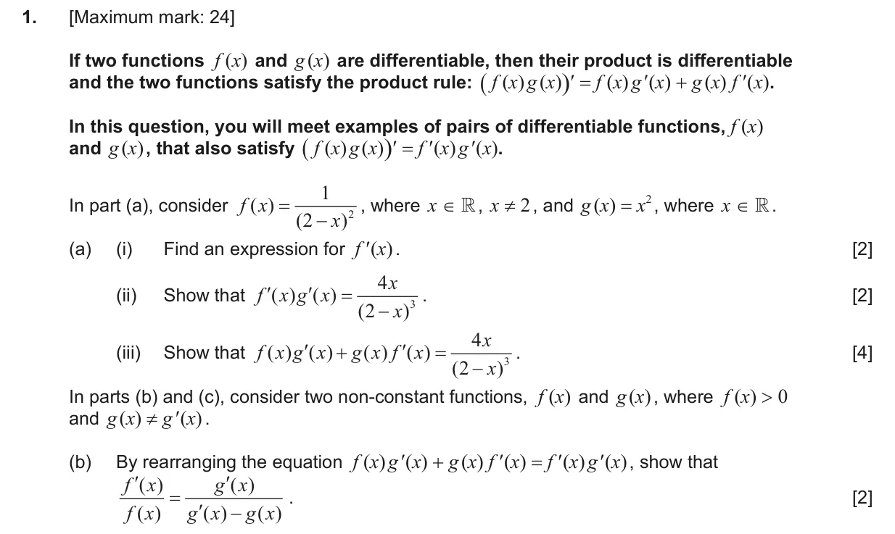
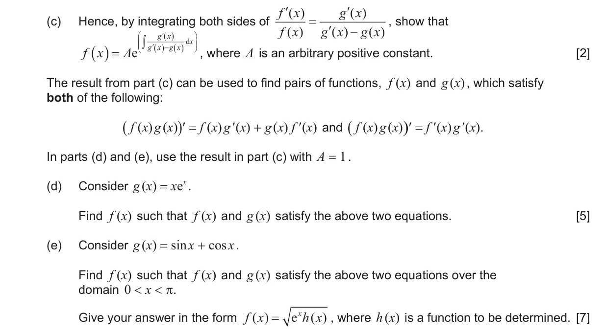
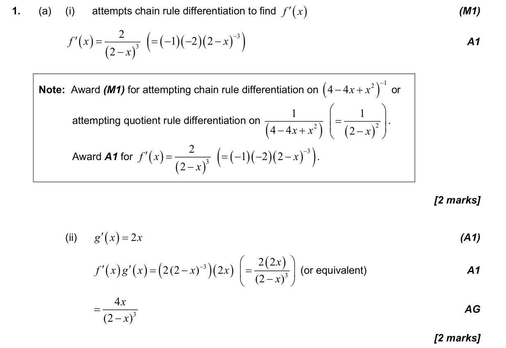
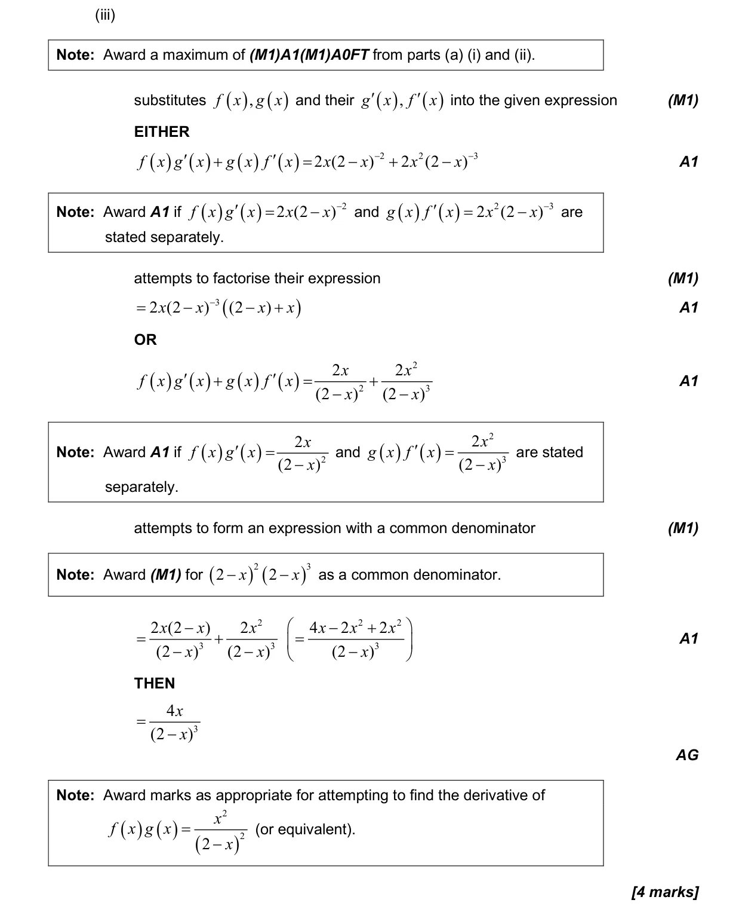
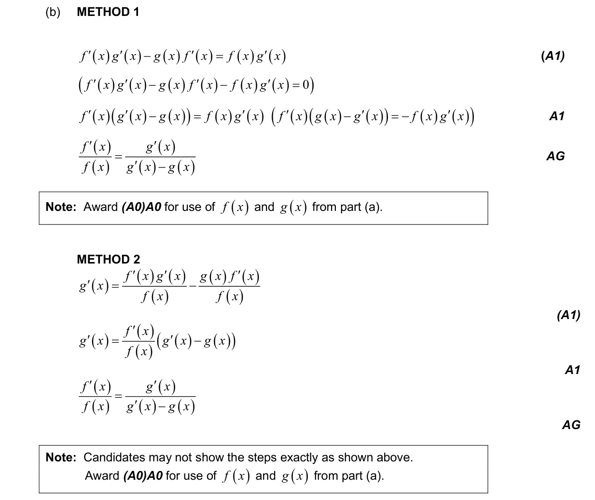
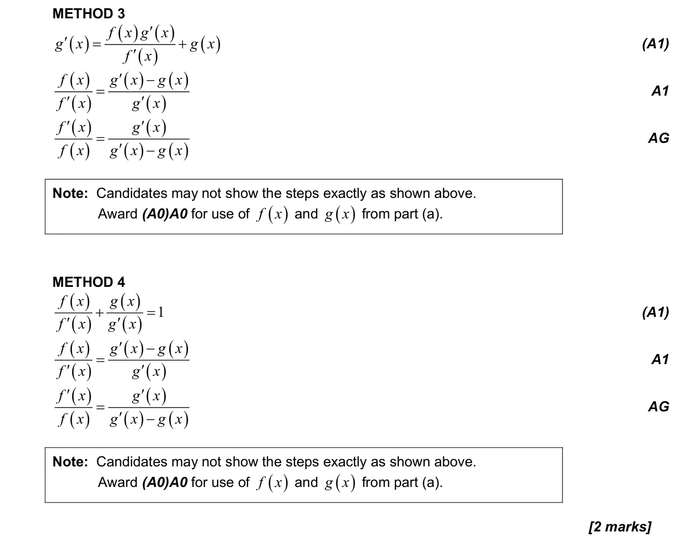
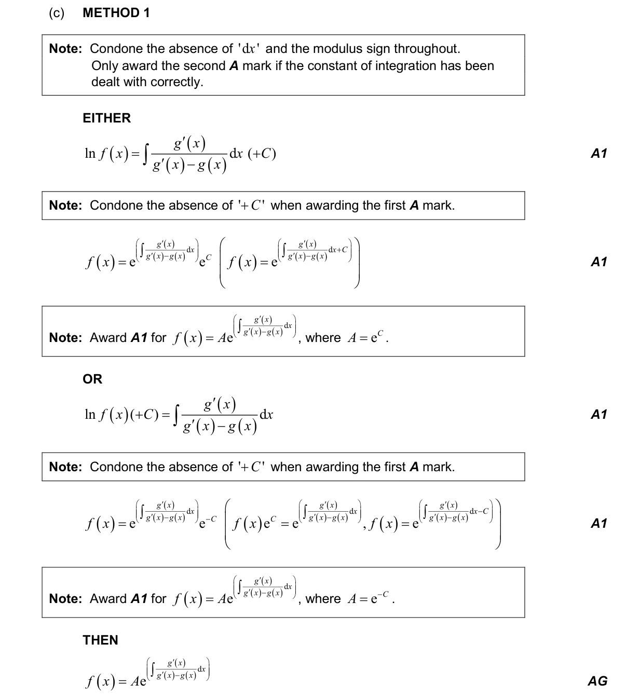
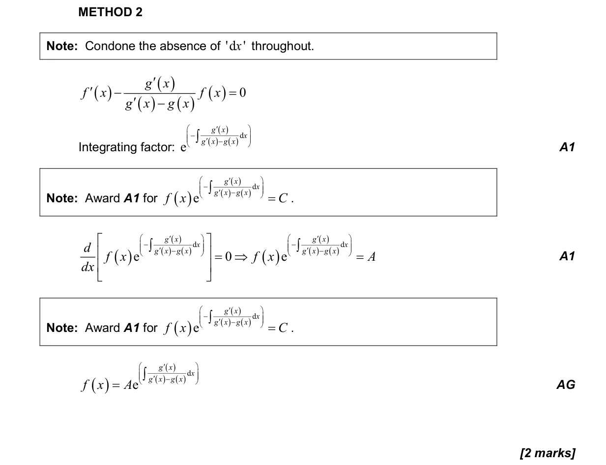
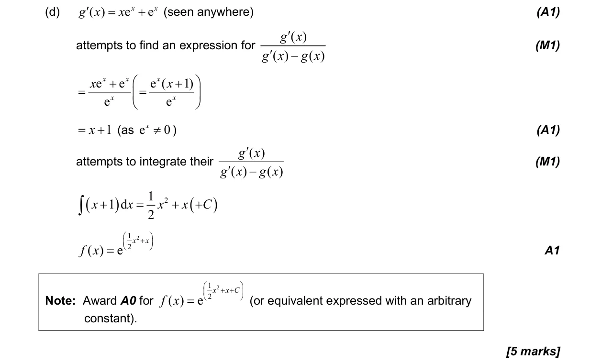
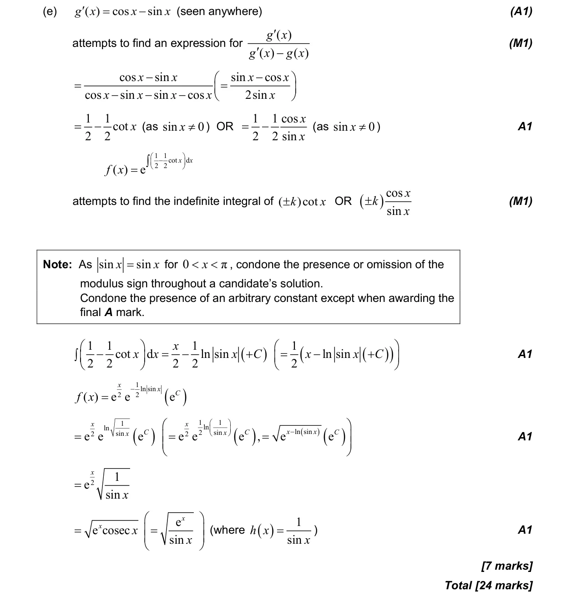

5.6 Differentiating polynomials n in Q, chain, product and quotient rules5.10 Indefinite integration, reverse chain and substitution5.5 Integration introduction, areas between curve and x-axis1.7 Laws of exponents and logarithms3.9 Reciprocal trigonometric ratios, Pythagorean identities and inverse trigonometric functions5.3 Differentiating polynomials, n in Z1.6 Simple deductive proof5.18 First-order differential equations
Question


Markscheme







